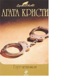

Два года прошло с тех пор, как Джек Эрджайл, осужденный за убийство матери, умер в заключении. Но вдруг ситуация меняется - из антарктической экспедиции возвращается полярный исследователь доктор Калгари. Он точно знает, что у Джека было алиби, и полон решимости отыскать настоящего преступника и оправдать осужденного, пусть и посмертно. Семья Эрджайла недовольна таким поворотом событий: теперь оказывается, что убийца - кто-то из них, вполне благопристойных граждан.